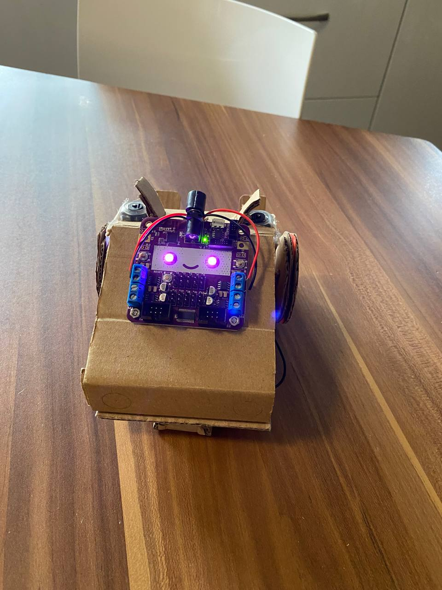
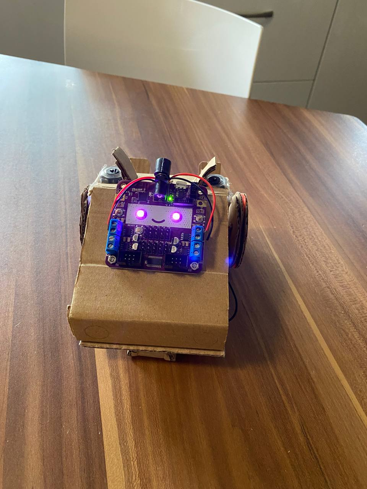

01
Research and Requirement Gathering
04
Critical Analysis
02
Sketch
03
Prototyping
A summary of the iterative process that team undertook from the start of the project to the final prototype
Team 10A
A summary of the iterative process that team undertook from the start of the project to the final prototype
In the Sketching phase, we translated our research and requirements into tangible concepts. The fusion of brainstorming and creativity led to the birth of multiple design ideas on paper. These preliminary sketches acted as the first visual representation of our understanding and ideas, an amalgamation of the Curio robot's existing strengths and the innovative features we sought to introduce. This iterative process was crucial in visualizing and refining our design before moving to the prototyping stage. The galleries below introduces the various ideas that we had throughout the project.
With the use of the Autocad Software to help us visualise our ideas clear, the below images are the some of the sketches that were on top of our heads intially. These small random burst of ideas and possibilities would eventually lead us to the prototyping of the final design.

Through the iterative process of sketching, prototyping, critical analysis and back to sketching, the team has filtered out the sketches with the most potential to become our final product.


During the Prototyping phase, our sketches came to life as we started crafting physical models of our ideas. Utilizing resources such as servos, cardboards, and the Smartibot Kit, we constructed working prototypes that embodied our innovative vision for the Curio robot. This hands-on process allowed us to test our design concepts in real-world conditions, revealing practical insights about usability, functionality, and aesthetic appeal. Each prototype represented an evolutionary step towards the final design, driving us closer to our goal of an improved Curio robot.
Our team's first prototype was a model of simplicity and practicality. We enhanced the original Smartibot design by integrating a supportive ledge at the rear. This added feature allowed the robot to securely hold a phone, enabling it to move with enhanced functionality. This initial prototype served as a straightforward, yet vital step in our journey, marrying the existing design with our innovative vision.


Our second prototype took inspiration from the speed-focused design of the Reliant Robin, resulting in a sleek and fast iteration of our Curio robot. While this prototype marked a significant leap towards achieving our speed objectives, it revealed areas for improvement, notably an unadjustable camera angle and an unstable phone mount. These learnings became invaluable as we continued refining our design.
 

Our third prototype, inspired by the design of a tank, emerged as a creative solution to address user confusion with the Curio Bot's orientation. With its innovative rotational top, the robot achieves full-spectrum maneuverability, rendering concerns about 'front' and 'back' irrelevant. The direction of the phone camera now intuitively defines the robot's forward path. Incorporating the high-speed motors from our Reliant Robin prototype, this design also addresses the speed limitation. Initial iterations featured 'teeth' at the bottom of the rotational top to enable dual servo motor operation. However, following a comprehensive critical analysis, we found this feature superfluous and streamlined our design by only using one servo to rotate the top. (Right Picture)

Building on the advancements of the rotational top, the team turned its focus to refining the tank's base. We equipped it with wheels and integrated the Smartibot microcontroller board to imbue movement. The team faced a significant decision point – choosing between a four-wheel or two-wheel design. Eventually, we opted for two main wheels supplemented by two freewheeling support wheels, as our motor wasn't powerful enough to concurrently drive four full-sized wheels. We further enhanced the design by incorporating small servos into the rotatable top, allowing remote control of the phone's resting angle. The culmination of our efforts is reflected in the final design, as depicted in the images below.


In the final phase of Critical Analysis, we rigorously evaluated each prototype, scrutinizing our designs under the lenses of functionality, usability, and aesthetics. We questioned every design decision, pushing ourselves to justify each feature, material, and design choice. This thorough analysis enabled us to identify both the strengths and areas for improvement in our prototypes. Armed with this knowledge, we revisited our sketching stage, incorporating these critical insights into refined designs. The cyclical nature of this process helped us to progressively refine our ideas, fueling our quest for an optimized Curio bot.
created with
Static Site Generator .